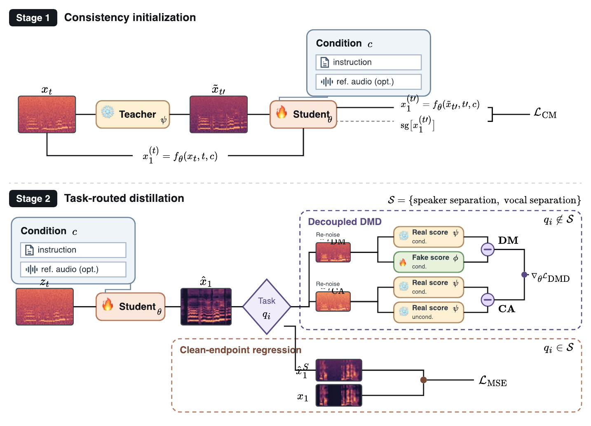

1 X-LANCE Lab, MoE Key Lab of Artificial Intelligence, Shanghai Jiao Tong University
2 State Key Laboratory of General Artificial Intelligence, BIGAI · 3 Shanghai Innovation Institute · 4 Tencent Hunyuan
* Corresponding authors
Large-scale unified speech foundation models address diverse tasks, including text-to-speech (TTS) synthesis and speech editing. However, iterative flow-matching sampling and the overhead of classifier-free guidance (CFG) make inference expensive. Distribution matching distillation (DMD) approximates teacher quality in far fewer steps, but applying it to a unified multi-task model causes severe capability degradation, and existing speech distillation methods are evaluated only on generation tasks. We propose Route-DMD, which assigns each class of tasks a dedicated objective: separation tasks are trained with a clean-endpoint regression loss on the ground-truth latent, while other tasks use the decoupled distribution-matching objective. The student is first initialized with consistency distillation, and CFG is replaced with adaptive projected guidance (APG) in teacher rollouts to suppress clipping artifacts. With four inference steps, the student matches the 32-step teacher and surpasses it on several tasks with a 4.5× end-to-end speedup, without sacrificing task coverage.

Overview of Route-DMD. Stage 1 uses consistency initialization for few-step endpoint prediction. Stage 2 routes separation samples to clean-endpoint regression and other samples to Decoupled DMD.
Student (4-step Route-DMD) vs. 32-step teacher. The input audio is shown for reference and is not a system output.